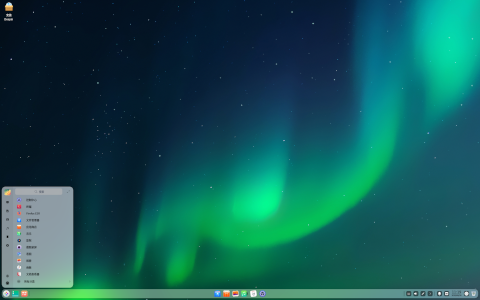
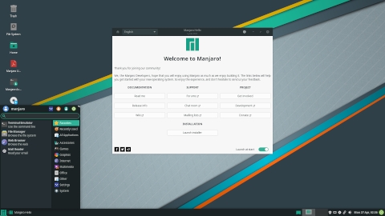
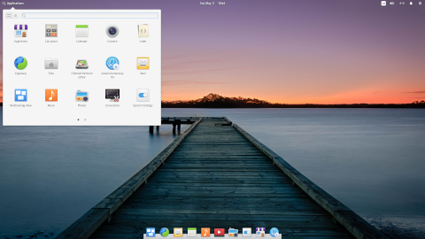
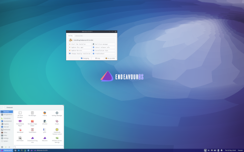

Bästa som hänt oss sen skivad ost
-- Master Christer.
· Arch Linux
· CentOS
· CRUX
· Debian
· DSL
· Edubuntu
· Feather Linux
· Fedora
· Foresight Linux
· Freespire
· Gentoo
· gNewSense
· Gnoppix
· Knoppix
· Kubuntu
· Linux Mint
· Linspire
· Lubuntu
· Mandriva
Pakethanterarens fundamentala uppgift är att installera datorprogram på sådant sätt att ett program inte stör ett annat programs funktion. Ytterligare funktioner som stöds av de flesta moderna pakethanterare är att automatiskt installera de andra paket ett paket behöver för att fungera optimalt, att hålla reda på paketutbudet och nya versioner av paketen samt att hämta de paket som behövs över Internet eller från andra källor. Dessutom erbjuds till exempel olika slags sökfunktioner, avancerade konfigurationsalternativ och verktyg för att skapa och manipulera paket.



